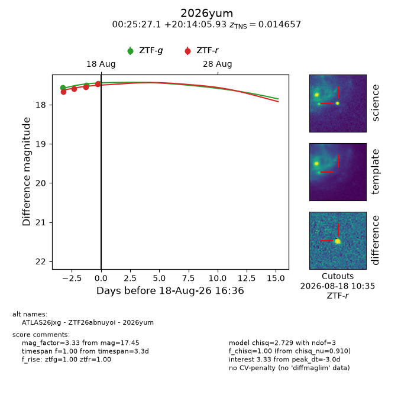
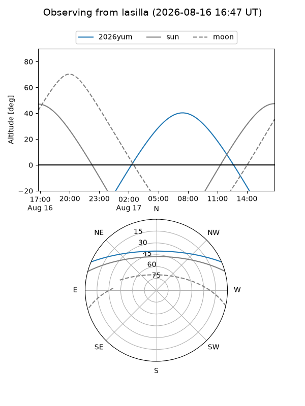
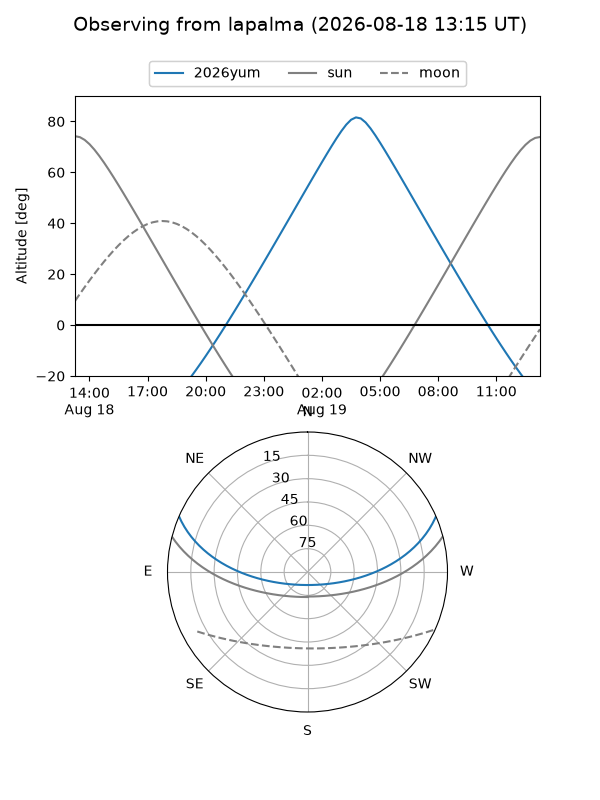
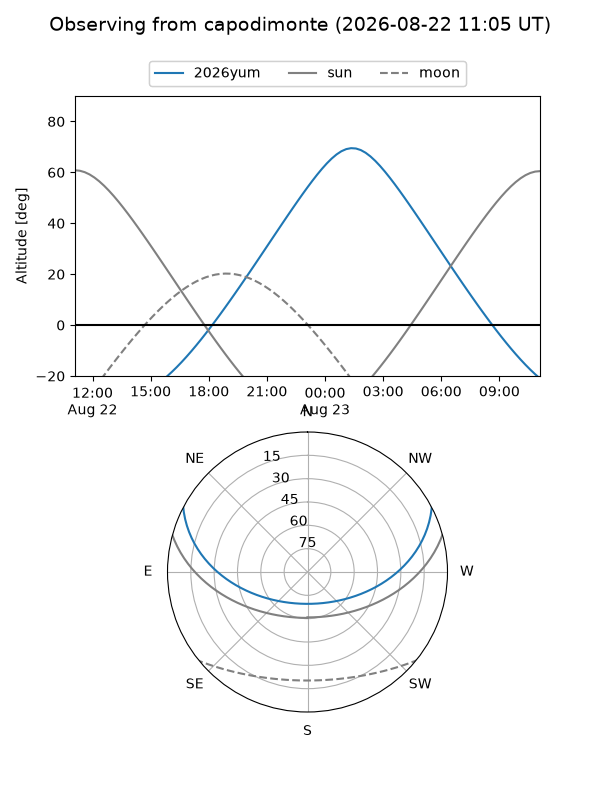
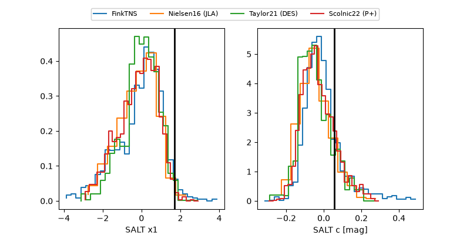

2026yum
Target 2026yum at 2026-08-18 16:39
Aliases and brokers:
FINK-ZTF: ztf.fink-portal.org/ZTF26abnuyoi
Lasair-ZTF: lasair-ztf.lsst.ac.uk/objects/ZTF26abnuyoi
ALeRCE-ZTF: alerce.online/object/ZTF26abnuyoi
YSE-PZ: ziggy.ucolick.org/yse/transient_detail/2026yum
TNS name: wis-tns.org/object/2026yum
Direct TNS query: direct search
alt names
ZTF26abnuyoi (ztf,fink_ztf)
2026yum (tns,yse)
ATLAS26jxg (atlas)
Coordinates:
equatorial (ra, dec) = 6.3630,+20.23498
equatorial (HMS+DMS) = 00:25:27.12,+20:14:05.93
galactic (l, b) = (114.6902,-42.22054)
Flags:
TNS type: SN II
TNS redshift: 0.0147
peak dt: -3.0
Photometry:
last ztfg=17.45, ztfr=17.47
3 ztfg, 4 ztfr detections
Lightcurve

Visibility



Additional plots
